Our project " briDge aN erA " was inspired by Genesis, a fresco painting by Michelangelo. One of most famous painting among Genesis, The Creation of Adam give us different idea. Since Adam's finger and God's finger are not actually touching, we want to lay out a bridge-like construction to fill up the gap between God's and Adam's finger. In addition, we hope that the idea of " briDge aN erA " will also build a bridge between our era and the next era, opening a totally brand new field in biomedicine.
After the modifying of biochip FF itself, our biochip is still a monomer, though. However, if there has any possibility combining diverser technology products to challenge the infinity possibility of our biochips? After exploring farther, pushing the carefully designed biochips to the trend of biotechnology field, AI robot, has the potential. When AI robot formally goes into the medical field, the function intensity of robot determines its practicality. Our gene detecting biochips will be the best tools to improve the robot’s performance. Before detecting, the pretreatment of sample will be done in the robot. This will completely develop our advantages: precision, simple, quick and inexpensive. Certainly, the advanced ideas must face more technical problems, not only electronic engineering but medical aspects all have to be solved. If the biochips FF can achieve these ideas, we believe that we can get a better answer to the question, how humans face the drug resistance genes, in the future.
In the future, the most threatening enemy of human medical science may not be cancer. It might be a mutated gene called multidrug resistance gene. Today, the detecting biochip designed by our team is a product withstanding multi-drug resistance gene. With the rapid changing environment and the abuse of antibiotics, the speed of bacterial gene mutation surpasses human’s imagination. For example, the gene of MSSA is induced to become mecA due to antibiotic abuse, causing the new strain type MRSA come out. We use this example as our model, combine characteristics of DNA conductive electricity and specificity hybridization to achieve a fast and cost-saving way of sample screening.
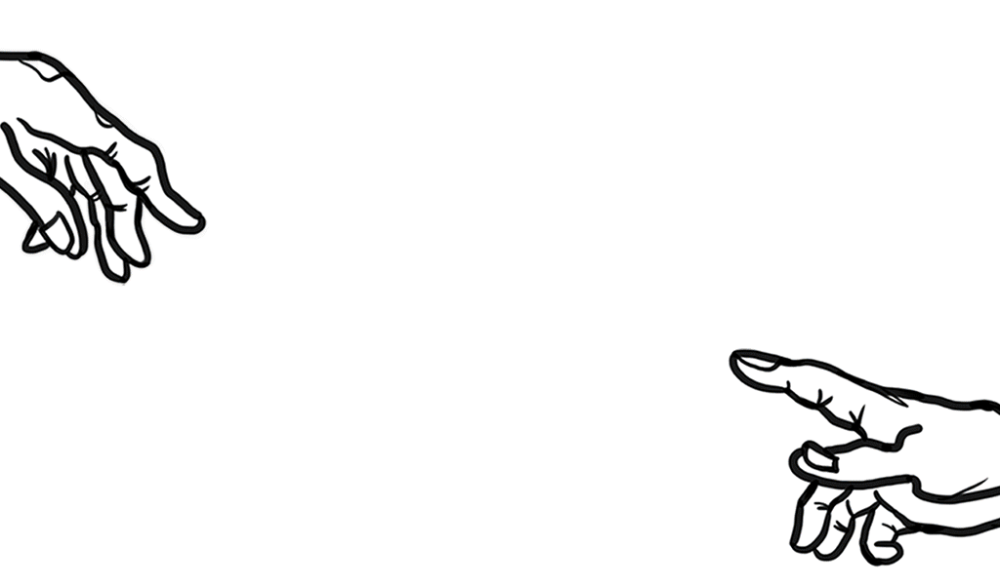We want to lay out a bridge-like construction to fill up the gap between God's and Adam's finger by using DNA sequences, and the ones we use here will be a drug-resistant gene. With the electric conductance of DNA, the electric signal transmitted after the DNA bridge constructed successfully.
The structure of the DNA bridge is made up of five materials: Route (Electron Hole), Approach Bridge (Capture Probe),Host Bridge (Target DNA), Street Light (Detector Probe),and Bridge Pier (Finger-Cross-Finger).
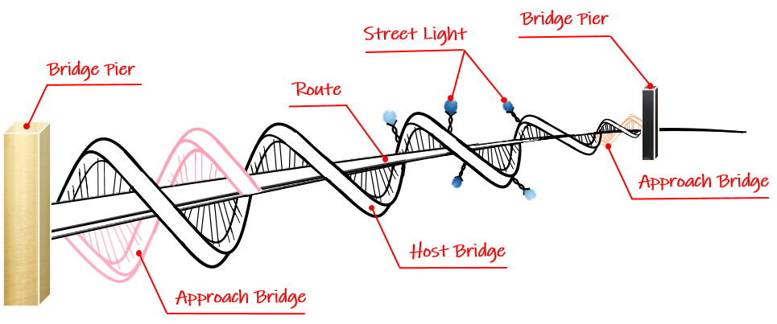In DNA, the one being responsible for conduction is called an electron hole. Of solid state physics, it refers to the lack of an electron at a covalent bond, then causes the phenomenon of leaving a vacancy on the bond.
Regarding the issue of DNA electrical properties, it was proposed as early as the 1960s. Since nucleotides have a planar structure similar to a benzene ring, when these nucleotides form a proper stacked pattern (p-stack), electrons may pass through the vertical plane of the Pz electronic orbital domain, moving along the electron holes on long chain, therefore the conductive of DNA built up.
We design a sequence of 999 base pair long from the resistance gene of mecA as the distance between the two Bridge Piers. Used to connect and support the Host bridge above, both Approach Bridges (Capture Probe) are 33-mer, which are from the start point and the end point.
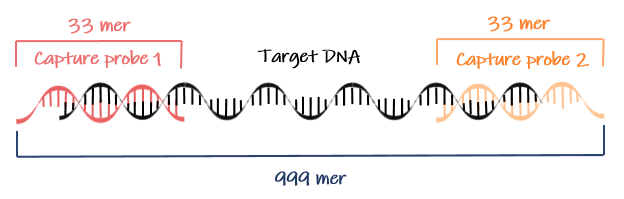We first use NUPACK to simulate the secondary structure of capture probe at different temperature to define a proper temperature for probes. At 37 °C, the capture probes have dimers because the temperature is too low that they don’t have enough specificity (left figure). The capture probes will not form dimers if the temperature reach the Tm value. We can see the result reveals that two capture probes are more specific at 60℃ and 50℃ separately (right figure).
Capture probe 1: AAAATCGATGGTAAAGGTTGGCAAAAAGATAAA
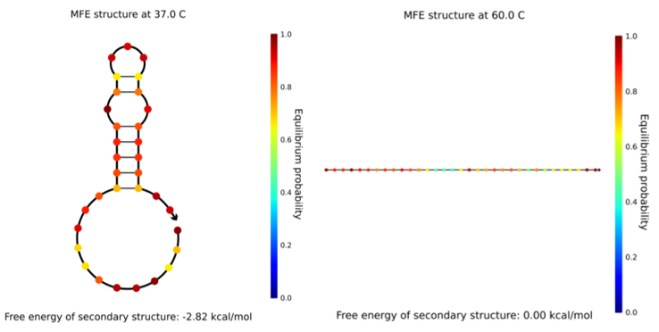Capture probe 2: AACTACGGTAACATTGATCGCAACGTTCAATTT
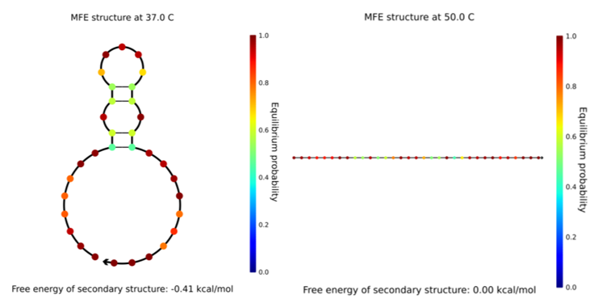According to the conductive properties of DNA, the conductivity of dsDNA is much better than that of ssDNA. Due to the the limitations of semiconductor technique, it's difficult to control the distance between two electrodes. Therefore, if our target DNA is way shorter than the distance between our electrodes, longer capture probes will be required. However, if ssDNA is used, it's easier to cause non-speciefic bindings or secondary structures such as hairpins. Compared to ssDNA capture probe, dsDNA is not only stable and easy to synthesize, but more importantly, greatly reduces non-specific bindings, which in turn improves detection. Therefore, capture probe with dsDNA is ultimatly selected.
To make sure the structure of our bridge is stable, we design the target DNA as the host bridge. This is the most important element of whole bridge. If the host bridge didn’t exist, there is no pathway for the electrons to transmit to the other side. To complete our blueprint about DNA bridge, we try three conditions to find out the best one for host bridge, also means target DNA. All conditions are designed based on the capture probe we set up before. The first condition is that the length of target DNA sequence is equal to the distance between two bridge piers (condition A), second one is shorter (condition B) and last one is longer (condition C). We prepared negative controls that have same conditions as well but without mecA sequence so they will not work absolutely.
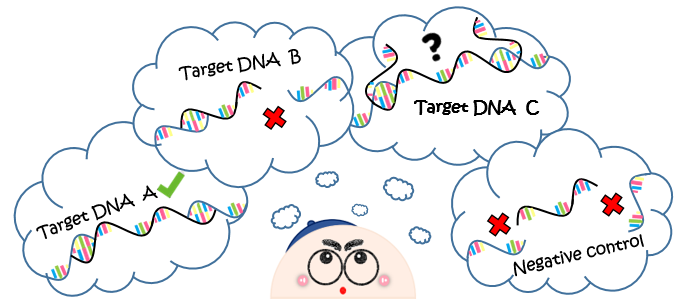We all know that condition A will work because it will match with the capture probe successfully and build up the access between two electrodes. As for condition B, because the length of sequences is too short so that it will only connect to one of the capture probe and not build up the access. And last one, condition C, the long sequences will definitely cross over two bridge piers so it may be work as well, but we don’t know what the real reason making the bridge work. It may be the real match of target DNA and capture probe, or it's just conducting since target DNA is long enough to directly touch both electrodes. So, we use the negative control to exclude first reason. These conditions can sufficiently ensure that the specific of capture probe.
The following are the primers we designed for different length of Target DNA.
| ID | Sequence 5' → 3' |
|---|---|
| Target A (F) | AACTACGGTAACATTGATCGCAACGTTCAATTT |
| Target A (R) | TTTATCTTTTTGCCAACCTTTACCATCGATTTT |
| Target B (F) | AACTACGGTAACATTGATCGCAACGTTCAATTT |
| Target B (R) | AATTCCACATTGTTTCGGTCTAAAA |
| Target C (F) | GTTGTAGTTGTCGGGTTTGGTATA |
| Target C (R) | TGAAAGGATCTGTACTGGGTTAATCAGT |
Moreover, we label biotin at the 3’-end as the necessary factor for “shining”.
Detector probe : 5' ACGATAATAGCAATACAATC 3'-biotin
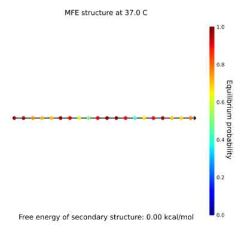After the host bridge built onto the approach bridge by hybridization, we assemble street light (detector probe) onto host bridge with hybridization. In order to make street light shine, we first add the anti-biotin antibody which labelled with horseradish peroxidase (HRP), and then add 3,3',5,5'-tetramethylbenzidine (TMB) substrate. Using the reaction of converting the substrate into a blue product which is visible, our street light will be shine once the host bridge have built onto the approach bridge successfully.
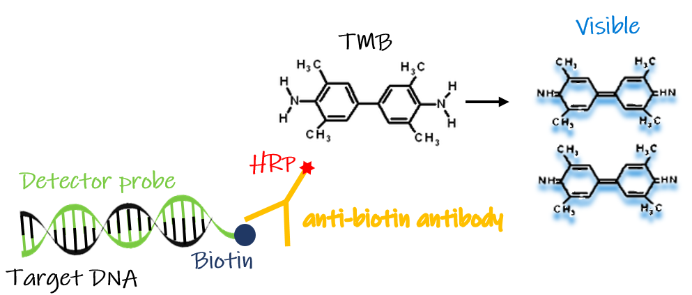To have a better specificity of short DNA segments compared to conventional biosensors, a novel sensor structure is designed. Two electrodes of different materials, gold (Au) and graphene (G), will be fabricated separately for two different capture probes (capture probe-A and capture probe-B) and their surface immobilization. Our idea about designing electrodes came from God’s and Adam’s finger themselves ,which are from Genesis: Au presents as God’s finger while G as Adam’s finger, and target DNA will present as the connection between two fingers. Therefore, the high probability of sequence detection could be achieved by double selection from the match with two capture probes. It could be a great breakthrough of DNA biochip.
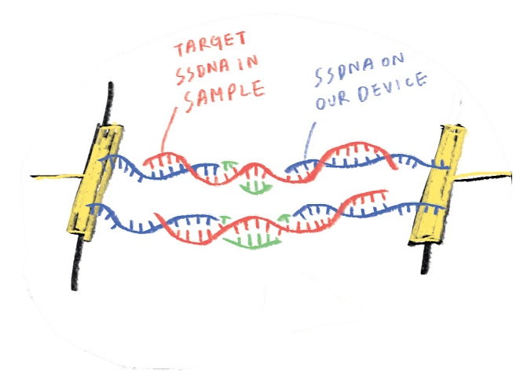The design concept is bridging two probe DNAs by one target DNA selection. Two different probe DNA sequences could be selectively immobilized by two different surface functional groups on two different electrodes, respectively. In our design, SH group could be attached on Au directly and NH2 group could be easily treated on graphene by an aminopropyltriethoxysilane (APTES) and glutaraldehyde (GA) immersion protocol. With the well establishment of bridge, the electrical path could be conducted and following a low resistance.
This behavior could be easily measured and the signals could be transferred to a user-friendly interface, which is the strength of biosensors. The designed chip could be used to detect shorter DNA segments, which is an advantage to conventional biosensors. In the meantime, much wide range of length of target DNA could be sensed by the modification of the distance or spacing between two electrodes. For mecA gene of MRSA, a spacing of two adjacent electrodes and a vertical distance between two electrodes is defined as 2000 and 800 nm, respectively.
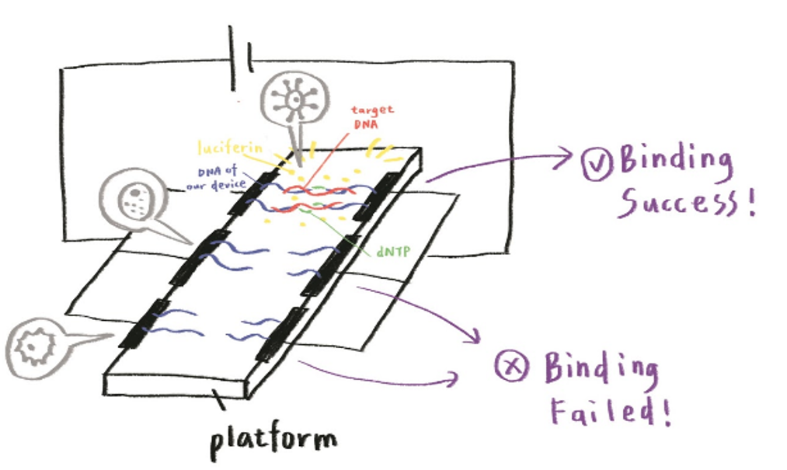To have two different surface functional groups on the surface of electrodes, different material is necessary for functionalizing. Two of most popular functional groups, such as -SH and -NH2, are chosen first. Then Au electrode is surely selected as the first electrode [ref]. A monolayer graphene grown by low-pressure chemical vapor deposition (LPCVD), which is a well-investigated 2D material, is selected as the second electrode [ref].
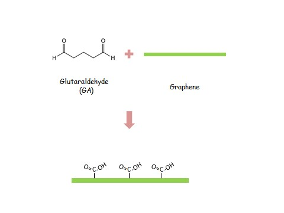To design two different electrodes, a layout was drawn in the AutoCAD software. For a high bridging possibility, an interdigital type of electrodes arrangement is drawn with a short spacing (2000 nm) and a long distance (4000 μm).
In the photolighthography step, the alignment between two layers are necessary but difficult to control in fully precise spacing from chip to chip. Therefore, the second design is figured out by stacking two electrodes.
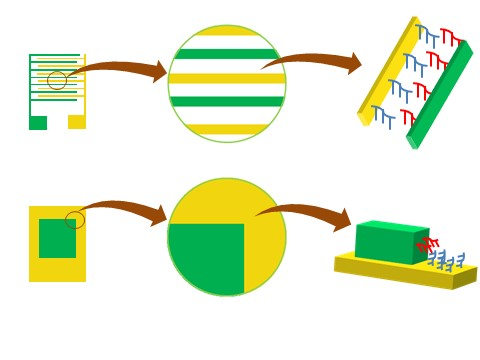Bottom electrode is Au and graphene on poly(methyl methacrylate) (PMMA) could be directly transferred on Au. PMMA, as a support of graphene, could be used as an insulator and its thickness, the spacing between two electrodes, could be used as the bridging distance of two probe DNAs and one target DNA. Au and graphene could be connected to electrical measurement out of DNA deposition area.
In detecting the connection between DNA and the electrode, cyclic voltammetry is used. Cyclic voltammetry gradually change the voltage under the same current, and the redox reaction of the sample is observed, and the result of the connection is judged by the type and change of the figure value.
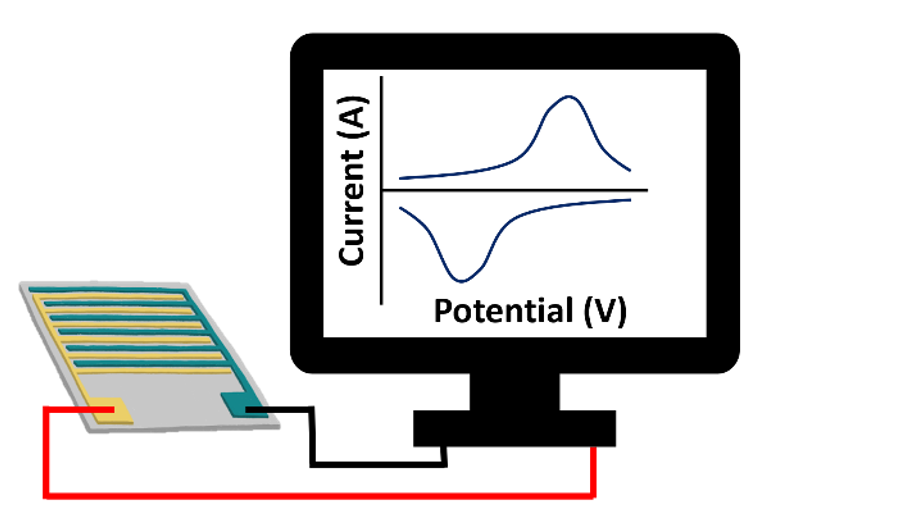